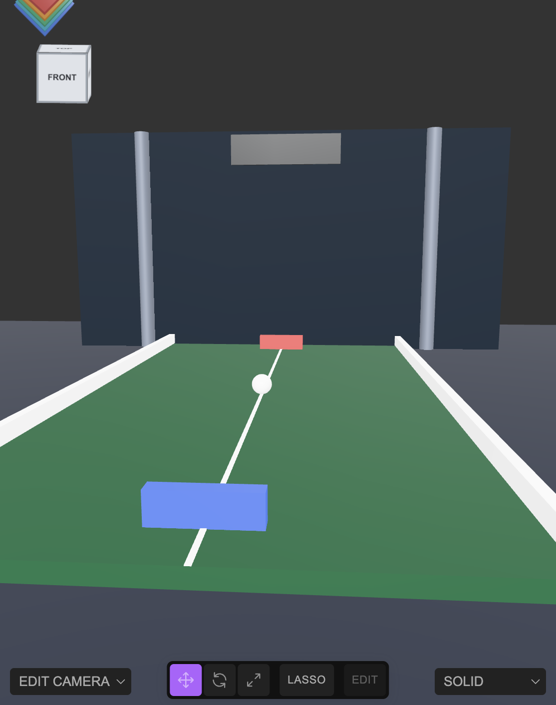

Build a table-view pong scene
A classic arcade Pong is a flat vertical screen — both paddles the same distance from the camera, separated left/right. This tutorial builds the other kind: a physical table you stand at one end of, your own paddle close in the foreground and the opponent's paddle small in the distance. The whole thing is one Group assembled with plain .add() calls and added in a single undo step. Open the editor, open the Shell tab, and paste each block in order.

+x/-x, walls on +y/-y, camera parked on +z looking straight in — and then trying to fix the camera afterward to make one paddle look "far away." No camera angle can do that: both paddles are equidistant from the camera on that layout, so any attempt to view it obliquely just makes the thin flat parts (walls, table) foreshorten into confusing diagonal slabs. Decide up front which world axis is "the length of the table" and build paddles onto that axis (here, z) — the perspective camera then does the near/far size difference for free.1 Lay out the table along z, not x
Keep y as true vertical (matches the camera's default up vector) and put the two paddles at opposite ends of z instead of x. Build every part into one Group with .add(), then add the whole group with a single AddObjectCommand:
const group = new Group();
group.name = 'Pong Game';
const tableMat = new MeshStandardMaterial({ color: 0x1c5c3a, roughness: 0.7 });
const railMat = new MeshStandardMaterial({ color: 0xffffff, roughness: 0.5 });
const playerMat = new MeshStandardMaterial({ color: 0x2e7dff, roughness: 0.4 });
const compMat = new MeshStandardMaterial({ color: 0xff4444, roughness: 0.4 });
const ballMat = new MeshStandardMaterial({ color: 0xffffff, roughness: 0.3 });
const table = new Mesh(new BoxGeometry(12, 0.4, 24), tableMat);
table.name = 'Table'; table.position.set(0, -0.2, 0);
group.add(table);
const railL = new Mesh(new BoxGeometry(0.3, 0.5, 24.4), railMat);
railL.name = 'Rail Left'; railL.position.set(-6.15, 0.25, 0);
group.add(railL);
const railR = new Mesh(new BoxGeometry(0.3, 0.5, 24.4), railMat);
railR.name = 'Rail Right'; railR.position.set(6.15, 0.25, 0);
group.add(railR);
const centerLine = new Mesh(new BoxGeometry(0.12, 0.02, 24), railMat);
centerLine.name = 'Center Line'; centerLine.position.set(0, 0.01, 0);
group.add(centerLine);
// The two paddles are on opposite ends of z — this is the whole trick.
const playerPaddle = new Mesh(new BoxGeometry(2.2, 0.7, 0.4), playerMat);
playerPaddle.name = 'Player Paddle'; playerPaddle.position.set(0, 0.35, 10.5);
group.add(playerPaddle);
const compPaddle = new Mesh(new BoxGeometry(2.2, 0.7, 0.4), compMat);
compPaddle.name = 'Computer Paddle'; compPaddle.position.set(0, 0.35, -10.5);
group.add(compPaddle);
const ball = new Mesh(new SphereGeometry(0.35, 24, 24), ballMat);
ball.name = 'Ball'; ball.position.set(0, 0.35, 0);
group.add(ball);
editor.execute(new AddObjectCommand(editor, group));2 Frame the far end
A backdrop, two pillars, and a scoreboard panel behind the computer's end give the camera something to look at beyond the far paddle — an empty background makes distance harder to read. Same pattern: one group, plain .add(), one command:
const scenery = new Group();
scenery.name = 'Background Scenery';
const floor = new Mesh(new PlaneGeometry(60, 50), new MeshStandardMaterial({ color: 0x333844, roughness: 0.9 }));
floor.name = 'Floor'; floor.rotation.x = -Math.PI / 2; floor.position.set(0, -0.45, -2);
scenery.add(floor);
const backdrop = new Mesh(new PlaneGeometry(24, 12), new MeshStandardMaterial({ color: 0x14202c, roughness: 0.85 }));
backdrop.name = 'Backdrop'; backdrop.position.set(0, 5.5, -14);
scenery.add(backdrop);
const pillarMat = new MeshStandardMaterial({ color: 0x777f8c, roughness: 0.6 });
const pillarL = new Mesh(new CylinderGeometry(0.4, 0.4, 12, 16), pillarMat);
pillarL.name = 'Pillar Left'; pillarL.position.set(-8, 5.5, -14);
scenery.add(pillarL);
const pillarR = new Mesh(new CylinderGeometry(0.4, 0.4, 12, 16), pillarMat);
pillarR.name = 'Pillar Right'; pillarR.position.set(8, 5.5, -14);
scenery.add(pillarR);
const board = new Mesh(new BoxGeometry(6, 1.6, 0.3), new MeshStandardMaterial({ color: 0x101418, roughness: 0.5 }));
board.name = 'Scoreboard'; board.position.set(0, 10.5, -14);
scenery.add(board);
editor.execute(new AddObjectCommand(editor, scenery));
editor.execute(new AddObjectCommand(editor, new AmbientLight(0xffffff, 0.5)));
const dir = new DirectionalLight(0xffffff, 1.2);
dir.position.set(4, 12, 10);
editor.execute(new AddObjectCommand(editor, dir));3 Stand the camera behind your own paddle
Position it a little further back than the player paddle's z, raised in y for eye height, and lookAt a point near the far end — down and slightly beyond the computer paddle, not the paddle itself, so the whole length of the table stays in frame:
const cam = editor.camera;
cam.position.set(0, 3, 21);
cam.up.set(0, 1, 0);
cam.fov = 60;
cam.lookAt(0, 0.2, -8);
cam.updateProjectionMatrix();
editor.controls.center.set(0, 0.2, -8);
editor.signals.cameraChanged.dispatch(cam);
editor.signals.objectChanged.dispatch(cam);z offset that seems modest can put the camera nearly edge-on to a thin flat object (a wall, a table surface), foreshortening it into a huge confusing diagonal slab that looks like a bug but isn't. Before trusting a screenshot, project the key points you care about through the candidate camera and check their normalized device coordinates (both components should stay roughly within -1..1 to be on screen):
const p = new Vector3(0, 0.35, 10.5).project(editor.camera); // Player Paddle
console.log(p.x, p.y); // outside -1..1 means it's off-frameComparing camera.position.distanceTo(...) to the near and far paddle also confirms the perspective ratio you're actually getting (here, roughly 2× — the far paddle is about twice as distant as the near one) before you spend time re-screenshotting.
4 Sanity-check the object count
Every editor.execute(...) above is undoable and shows up in editor.history.undos. After any batch of Shell edits, especially ones driven by automation rather than typing, compare the scene's object count against what you expect:
editor.scene.children.length; // top-level count
editor.history.undos.length; // commands issued this sessionRemoveObjectCommand sitting in the same undo stack as your real edits. Checking editor.history.undos for command types you didn't intend to run is the fastest way to catch it, and every entry there is individually undoable if something needs reverting.